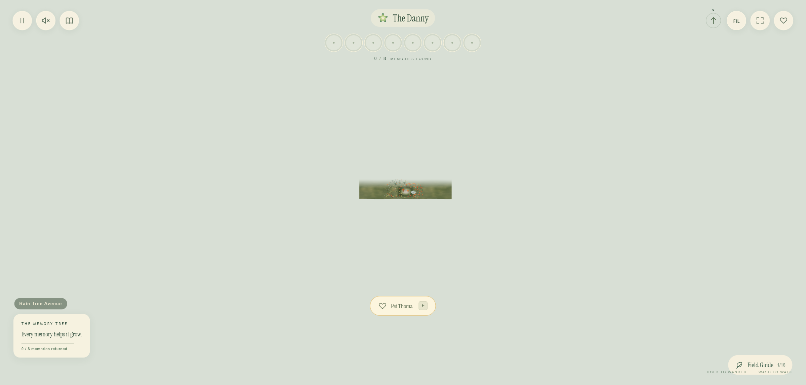
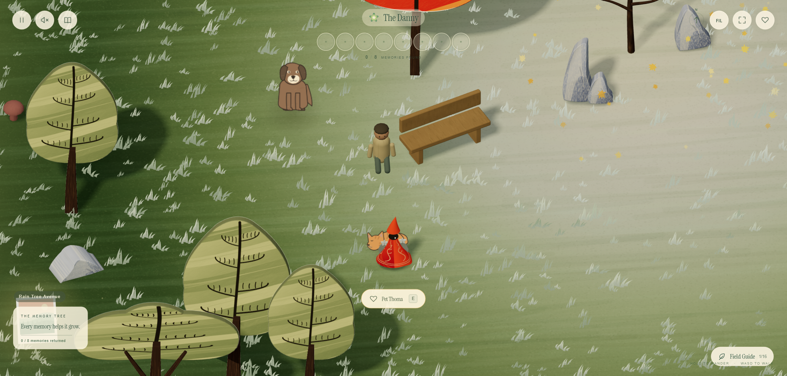
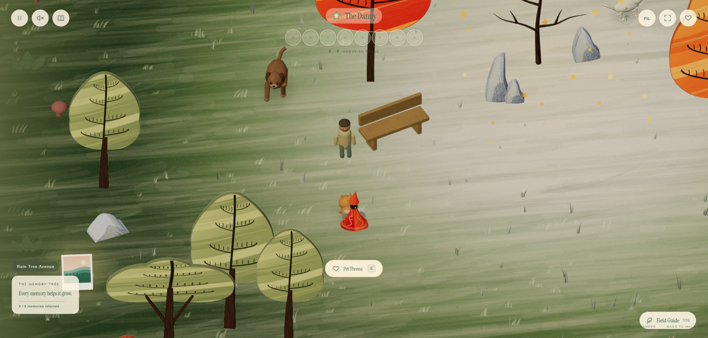
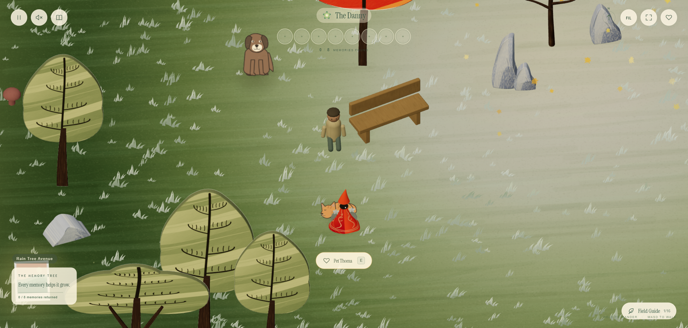
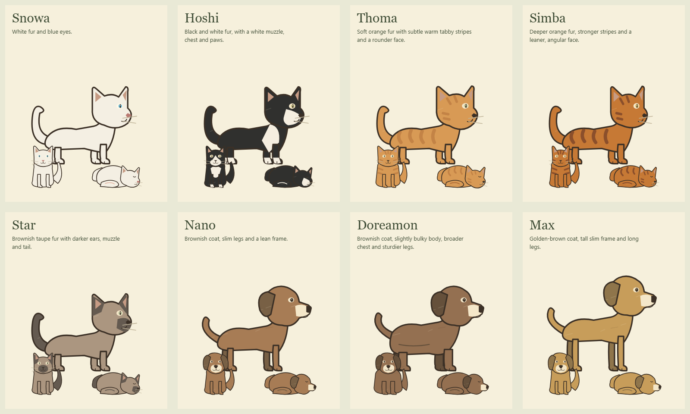
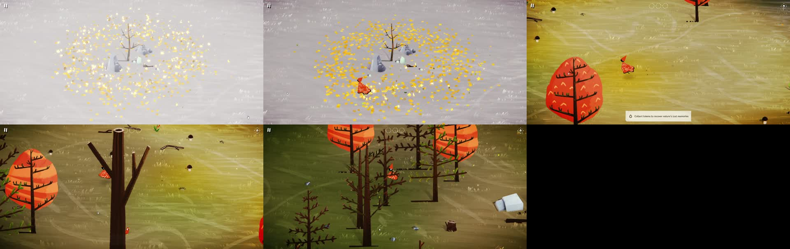
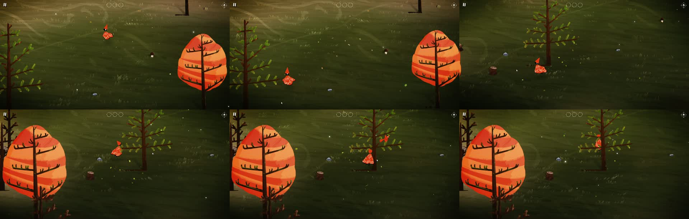
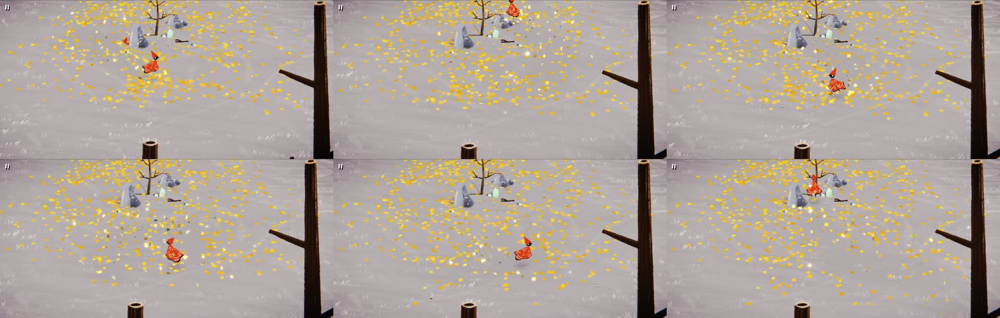
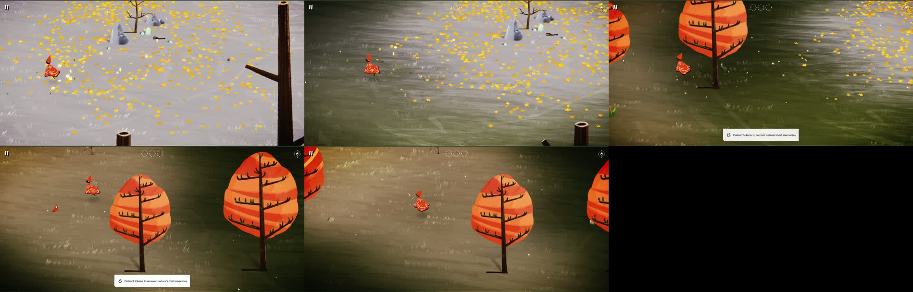

The Danny · Camera, grass & companions
A closer view, softer painted meadows, a breeze through rooted grass, and the eight original companions.
The camera collapse is fixed
The original failure was reproduced by changing quality at 125% display scaling. The current view keeps its world framing across quality changes.


Closer framing and softer grass


The grass in motion
The opening second shows the breeze while standing still. Movement then brushes the grass aside. This fixed-step recording demonstrates animation timing.
The eight companions

Updated to flat ink and painted sprites. Open the animated animal preview to see their walk, sit, sleep and groom drawings.
Grass and landscape reference frames



